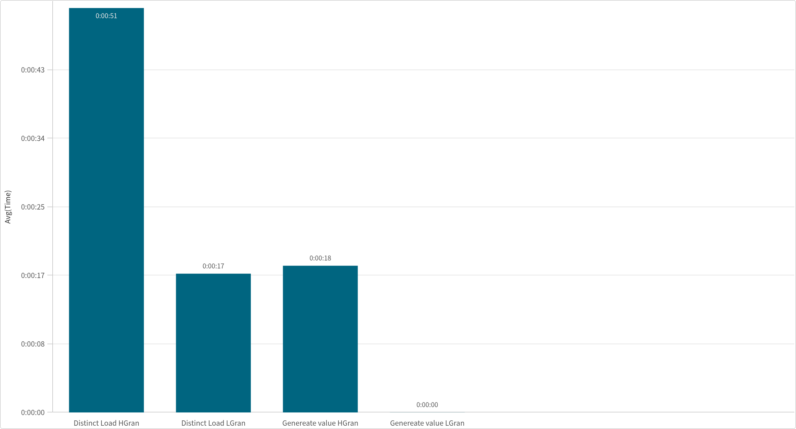

This is one of my favourite Qlik script patterns. I use it constantly — for incremental loads, for finding rows that exist in one table but not another, and anywhere I need a fast "does this value exist?" check without loading extra fields. Once you start using it, you'll see it everywhere.
The core idea
A mapping table in Qlik is a special two-column lookup: a key and a value. Most people use it to replace or enrich a field — map a product ID to a product name, for example. But what if the value itself is the point?
If you map every distinct key to the value 1, you've built a pure existence check.
Call ApplyMap() with that table — if the key exists, you get back 1.
If it doesn't, you get the default (usually 0 or null).
That's all you need.
Map_TransID_Exist:
Mapping LOAD DISTINCT
TransID,
1
RESIDENT Transactions;Now you can use it to filter in a WHERE clause. Here's the classic incremental load pattern — load only the QVD rows that are not already in the in-memory table:
Concatenate(Transactions)
LOAD * FROM '$(vQVDOutputName(Transactions))' (qvd)
WHERE ApplyMap('Map_TransID_Exist', TransID) <> 1;This gives you incremental loading without joins, without loops, and without any extra complexity. The QVD is optimally read (only the WHERE clause breaks optimized mode, but that's unavoidable here), and only the genuinely new rows are appended.
Map_[Field]_[Purpose] is a convention I stick to.
It makes debugging a script written six months ago much less painful.
Other places this pattern shines
Incremental loads are the obvious use case, but the same trick applies anywhere you need to compare two sets of values:
- Find customers in a CRM table that have no matching row in the transactions table
- Flag products that exist in a lookup but are missing from the fact table
- Identify store codes present in one data source but absent in another
- Filter a large table down to only the keys that appear in a smaller reference set
Any time the question is "does this value exist over there?" — map it to 1 and apply it.
The experiment: can we build the mapping table faster?
I was working with a dataset of 10 million rows and noticed that building the
mapping table with LOAD DISTINCT was taking a noticeable chunk of time — especially
on high-cardinality fields. That got me thinking: Qlik already knows every distinct value in a
field. It has to, because of how the associative engine works internally. So why scan all 10
million rows to find distinct values when we could just ask Qlik what it already knows?
That's exactly what FieldValue() and FieldValueCount() do.
FieldValueCount('FieldName') returns the number of distinct values in a field.
FieldValue('FieldName', n) returns the nth distinct value.
Together with AutoGenerate, you can build the complete distinct value list by reading
directly from Qlik's internal symbol table — no row scanning required.
DISTINCT:
Mapping LOAD
FieldValue('TransID', RecNo()) AS TransID,
1
AutoGenerate FieldValueCount('TransID');This generates one row per distinct value, entirely from the in-memory index — it never touches the actual data rows at all.
The test
I tested four combinations on the same 10M row dataset: DISTINCT load vs
FieldValue + AutoGenerate, each on a high-granularity field
(many distinct values) and a low-granularity field (few distinct values).
I ran each method several times and logged average execution time using a small logging subroutine.
SUB Distinct
LET vTestStart = timestamp(now(), 'hh:mm:ss');
DISTINCT:
Mapping LOAD DISTINCT Dimension3, 1
RESIDENT Transactions;
DROP MAPPING TABLE DISTINCT;
Call sLog('Distinct Load HGran', '$(vTestStart)', timestamp(now(), 'hh:mm:ss'));
LET vTestStart = timestamp(now(), 'hh:mm:ss');
DISTINCT:
Mapping LOAD DISTINCT Number, 1
RESIDENT Transactions;
DROP MAPPING TABLE DISTINCT;
Call sLog('Distinct Load LGran', '$(vTestStart)', timestamp(now(), 'hh:mm:ss'));
LET vTestStart = timestamp(now(), 'hh:mm:ss');
DISTINCT:
Mapping LOAD
FieldValue('Dimension3', RecNo()) AS Dimension3,
1
AutoGenerate FieldValueCount('Dimension3');
DROP MAPPING TABLE DISTINCT;
Call sLog('Generate value HGran', '$(vTestStart)', timestamp(now(), 'hh:mm:ss'));
LET vTestStart = timestamp(now(), 'hh:mm:ss');
DISTINCT:
Mapping LOAD
FieldValue('Number', RecNo()) AS Number,
1
AutoGenerate FieldValueCount('Number');
DROP MAPPING TABLE DISTINCT;
Call sLog('Generate value LGran', '$(vTestStart)', timestamp(now(), 'hh:mm:ss'));
END SUBThe results
The numbers came out better than I expected — particularly for the low-granularity field:
| Method | High granularity | Low granularity |
|---|---|---|
| Mapping LOAD DISTINCT | 0:00:51 | 0:00:17 |
| FieldValue + AutoGenerate | 0:00:18 | ~0:00:00 |

On the high-granularity field, FieldValue + AutoGenerate
was 65% faster (18s vs 51s). On the low-granularity field,
the result was almost instant — essentially zero — compared to 17 seconds for DISTINCT.
Why is it faster?
LOAD DISTINCT has to scan every row in the source table to collect unique values.
With 10 million rows, that's 10 million comparisons — even if there are only 5 distinct values.
FieldValue() bypasses that entirely. Qlik's associative engine already maintains
an internal symbol table with every distinct value for every field — it's what powers
the green/white/grey selection states you see in list boxes. FieldValueCount()
just reads the size of that table, and FieldValue(n) reads the nth entry.
No row scanning, no deduplication work — it's already done.
This is why the gap is so dramatic on low-granularity fields: if there are only 10 distinct values
in 10 million rows, DISTINCT still checks all 10 million rows, while
FieldValue reads exactly 10 entries from the symbol table.
LOAD DISTINCT from the QVD.
When to use which
- Use FieldValue + AutoGenerate when the source table is already in memory (Resident load scenario). Always faster, especially on low-granularity fields.
- Use LOAD DISTINCT when reading from a QVD or external source directly, before data is in memory.
The pattern stays the same either way — map distinct values to 1, apply with a WHERE clause. Just swap the loading method based on whether your data is already in RAM.